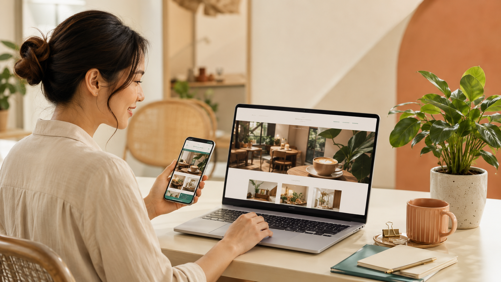

Thiết kế website tại TPHCM cho cửa hàng nhỏ
Bạn đang kinh doanh tại TPHCM và muốn có một website riêng để khách dễ tìm, dễ xem và dễ liên hệ? Duyên Lành Web cung cấp dịch vụ thiết kế website tại TPHCM cho quán cà phê, spa, shop thời trang, tiệm tóc, cửa hàng dịch vụ và doanh nghiệp nhỏ cần một website gọn gàng, rõ ràng, chuẩn mobile.
Với nhiều cửa hàng nhỏ, website không cần quá phức tạp. Điều quan trọng là khách hàng nhìn vào phải hiểu ngay bạn bán gì, ở đâu, giá tham khảo thế nào và liên hệ bằng cách nào. Một website tử tế nên giống một mặt tiền online sáng sủa: không ồn ào, không rối rắm, nhưng đủ tin cậy để khách muốn bước vào.

Vì sao cửa hàng nhỏ ở TPHCM nên có website riêng?
TPHCM là nơi khách hàng có rất nhiều lựa chọn. Trước khi ghé một quán cà phê, đặt lịch spa, mua sản phẩm hoặc tìm một dịch vụ địa phương, nhiều người sẽ tìm trên Google, Google Maps hoặc xem thông tin trên điện thoại. Nếu bạn chỉ có fanpage, khách vẫn có thể biết đến bạn, nhưng bạn đang thiếu một điểm đến chính thức để trình bày đầy đủ thông tin.
Một website riêng giúp cửa hàng nhỏ tạo sự chuyên nghiệp và chủ động hơn trong cách giới thiệu thương hiệu. Fanpage có thể trôi bài, tin nhắn có thể bị bỏ lỡ, nhưng website luôn là nơi khách có thể xem lại thông tin quan trọng bất cứ lúc nào.
Một website tốt có thể giúp bạn:
- Giới thiệu rõ dịch vụ, sản phẩm, bảng giá, địa chỉ và thời gian hoạt động.
- Tạo điểm đến chính thức khi khách tìm tên thương hiệu trên Google.
- Hiển thị tốt trên điện thoại, phù hợp thói quen tìm kiếm của khách địa phương.
- Gắn nút gọi điện, Zalo, bản đồ và form liên hệ để khách hành động nhanh.
- Hỗ trợ SEO lâu dài cho các từ khóa liên quan đến dịch vụ và khu vực.
Thiết kế website tại TPHCM phù hợp với những ngành nào?
Duyên Lành Web tập trung vào nhóm khách hàng nhỏ, cần website vừa đủ, dễ dùng và không muốn đầu tư hệ thống quá nặng. Một số mô hình phù hợp gồm:
- Quán cà phê, quán ăn nhỏ: cần giới thiệu không gian, menu, địa chỉ, bản đồ và hình ảnh quán.
- Spa, salon, tiệm tóc: cần trình bày dịch vụ, bảng giá, hình ảnh trước sau và nút đặt lịch.
- Shop thời trang, mỹ phẩm, phụ kiện: cần trang giới thiệu sản phẩm, phong cách thương hiệu và thông tin liên hệ.
- Dịch vụ địa phương: sửa chữa, vệ sinh, thiết kế, in ấn, đào tạo hoặc tư vấn.
- Doanh nghiệp nhỏ: cần website giới thiệu công ty, năng lực, dự án và kênh liên hệ chính thức.
Một website cửa hàng nhỏ nên có những phần nào?
Không phải website nào cũng cần thật nhiều chức năng. Với cửa hàng nhỏ tại TPHCM, cấu trúc nên rõ và gọn. Người xem chỉ cần vài giây để biết bạn là ai, cung cấp gì và liên hệ ra sao.
Một website cơ bản nên có:
- Trang chủ: giới thiệu nhanh thương hiệu, dịch vụ chính và lý do khách nên chọn bạn.
- Trang dịch vụ hoặc sản phẩm: trình bày rõ từng nhóm dịch vụ, hình ảnh và thông tin cần biết.
- Bảng giá hoặc gói dịch vụ: giúp khách tự ước lượng ngân sách trước khi liên hệ.
- Trang giới thiệu: kể ngắn gọn câu chuyện thương hiệu, cách làm việc và cam kết.
- Trang liên hệ: có số điện thoại, Zalo, email, địa chỉ và Google Maps.
- Bài viết SEO: trả lời các câu hỏi khách thường tìm trên Google.
Chi phí thiết kế website tại TPHCM khoảng bao nhiêu?
Chi phí thiết kế website phụ thuộc vào số lượng trang, mức độ thiết kế, nội dung, hình ảnh và chức năng cần có. Với cửa hàng nhỏ, Duyên Lành Web định hướng các gói vừa phải, dễ hiểu, không làm phức tạp quá mức cần thiết.
Hiện tại, mức giá tham khảo nằm trong khoảng 3 triệu đến 8 triệu đồng, phù hợp với quán cà phê, shop, spa, tiệm tóc và doanh nghiệp nhỏ mới bắt đầu xây dựng hiện diện online.

Anh/chị có thể xem thêm tại bảng giá thiết kế website hoặc tham khảo dịch vụ thiết kế website của Duyên Lành Web.
Quy trình thiết kế website tại Duyên Lành Web
Một website nhỏ vẫn cần quy trình rõ ràng. Làm vội thường khiến nội dung rối, giao diện lệch và sau này khó chỉnh sửa. Duyên Lành Web ưu tiên cách làm chậm vừa đủ, rõ từng bước, để chủ cửa hàng dễ theo dõi.
- Tư vấn nhu cầu: xác định ngành nghề, mục tiêu, khách hàng và ngân sách.
- Chuẩn bị nội dung: thu thập logo, hình ảnh, dịch vụ, bảng giá, thông tin liên hệ.
- Lên bố cục website: sắp xếp các phần quan trọng theo hành trình của khách.
- Thiết kế và chỉnh sửa: hoàn thiện giao diện, màu sắc, hình ảnh và nội dung.
- Tối ưu cơ bản: kiểm tra mobile, tốc độ, tiêu đề, mô tả, nút liên hệ và liên kết nội bộ.
- Bàn giao và hướng dẫn: hướng dẫn cách sử dụng, cập nhật nội dung và theo dõi website.
Website có thay thế fanpage không?
Website không thay thế fanpage. Hai kênh này nên hỗ trợ nhau. Fanpage phù hợp để đăng bài thường xuyên, trò chuyện với khách và xây cộng đồng. Website phù hợp để lưu thông tin chính thức, giới thiệu dịch vụ rõ ràng và hỗ trợ khách tìm thấy bạn qua Google.
Cách tốt nhất là dùng website làm “nhà chính”, còn fanpage, Zalo và Google Maps là những con đường dẫn khách về nhà. Khi các kênh này liên kết với nhau, thương hiệu của bạn nhìn đáng tin hơn và khách cũng dễ ra quyết định hơn.
Duyên Lành Web hỗ trợ khu vực nào tại TPHCM?
Duyên Lành Web hỗ trợ khách hàng tại nhiều khu vực ở TPHCM, đặc biệt là Gò Vấp, Tân Bình, Bình Thạnh, Phú Nhuận, Quận 7, Thủ Đức, Bình Tân, Tân Phú và các khu vực lân cận. Với khách ở xa, toàn bộ quá trình tư vấn, gửi nội dung, chỉnh sửa và bàn giao website có thể thực hiện online.
Điều quan trọng không phải là khoảng cách, mà là cách làm việc rõ ràng: thống nhất nội dung, phản hồi đúng hẹn, chỉnh sửa có kiểm soát và bàn giao để khách thật sự dùng được website.
Câu hỏi thường gặp
Thiết kế website tại TPHCM mất bao lâu?
Một website giới thiệu đơn giản thường mất khoảng 5 đến 10 ngày làm việc, tùy số lượng nội dung, hình ảnh và số lần chỉnh sửa. Nếu anh/chị đã có sẵn logo, hình ảnh và nội dung, thời gian triển khai sẽ nhanh hơn.
Website 3 triệu có phù hợp với cửa hàng nhỏ không?
Có. Gói 3 triệu phù hợp với cửa hàng nhỏ cần một website giới thiệu rõ ràng, chuẩn mobile, có thông tin dịch vụ, địa chỉ, bản đồ và nút gọi hoặc Zalo. Đây là lựa chọn vừa đủ để bắt đầu hiện diện chuyên nghiệp trên internet.
Website có SEO được không?
Có. Website có thể được tối ưu SEO cơ bản như tiêu đề trang, mô tả, cấu trúc heading, tốc độ tải, hiển thị điện thoại, liên kết nội bộ và bài viết tư vấn. SEO cần thời gian, nhưng nền tảng website sạch sẽ giúp quá trình đi đường dài nhẹ hơn.
Tôi chưa có nội dung thì có làm website được không?
Được. Duyên Lành Web có thể hỗ trợ gợi ý bố cục, câu chữ cơ bản và danh sách thông tin cần chuẩn bị. Anh/chị chỉ cần cung cấp ngành nghề, dịch vụ chính, hình ảnh hiện có và cách khách liên hệ.
Duyên Lành Web có hỗ trợ khách ngoài TPHCM không?
Có. Dù bài viết này tập trung vào thiết kế website tại TPHCM, Duyên Lành Web vẫn có thể hỗ trợ khách ở các tỉnh thành khác thông qua tư vấn online, gửi nội dung qua email, Zalo và bàn giao từ xa.
Bạn muốn bắt đầu một website nhỏ nhưng tử tế?
Duyên Lành Web có thể giúp bạn xây dựng một website rõ ràng, dễ dùng, chuẩn mobile và phù hợp với ngân sách của cửa hàng nhỏ. Nếu anh/chị đang có quán cà phê, spa, shop hoặc dịch vụ địa phương tại TPHCM, hãy liên hệ để được tư vấn hướng làm phù hợp.